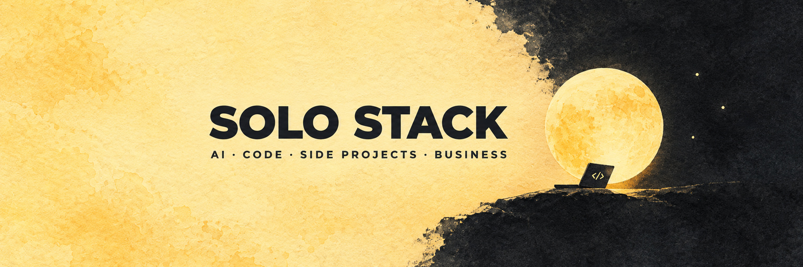

Dein Studio.
Nachtstudio
EmpfehlungWarmes Pigmentpapier fließt beim Scrollen in eine ruhige Nacht. Der Himmel folgt der lokalen Uhrzeit, der Mond wird zum Schalter. Die stärkste Verbindung zum bestehenden Banner.
Vier eigenständige Entwürfe für solo-stack.dev. Öffne eine Richtung und probiere sie aus. Alle Texte und Inhalte sind Platzhalter.
Warmes Pigmentpapier fließt beim Scrollen in eine ruhige Nacht. Der Himmel folgt der lokalen Uhrzeit, der Mond wird zum Schalter. Die stärkste Verbindung zum bestehenden Banner.
Ein ruhiger, persönlicher Einstieg mit einem kleinen Spiel als Überraschung. Auf dem gelben Mond hüpft der Entwickler über Bugs und sammelt Sterne. Das Spiel startet erst auf Klick.
Der Name wird zum Gestaltungssystem: geschichtete Papiere, kantige Typografie und auffächerbare Videokarten. Mit einem kleinen Baukasten entsteht ein persönlicher Tech Stack zum Kopieren.
Das Entwicklungslog als fortlaufende Geschichte: Videos werden Episoden, Projekte zu Arcs. Manga Panels, Rasterpunkte und ein kurzes Opening setzen einen dezenten Anime Akzent.
Nachtstudio übersetzt die vorhandene Marke am überzeugendsten ins Web und trägt auch längere Texte und Kontaktformulare. Die Papierkarten aus Stack können die Inhalte ergänzen; der kleine Planet passt später als freiwillige Pause in den unteren Seitenbereich.
